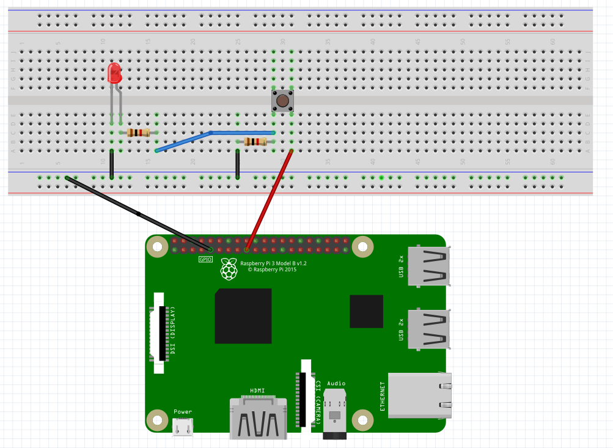

Basics
To code with Python on the Raspberry Pi, we will use the pre-installed Thonny editor. If you want to make a change in the circuit, always power off the board first. When powered on, avoid touching the circuit. Double-check everything before plugging the power cable.
Below, you can see the schematic of how the GPIOs (General Purpose Input-Output) are numbered and destined on the Raspberry Pi. We connect our sensors to them.
To connect those sensors, we also need a breadboard (on the right). It has two special lines on both sides and normal ones in the middle. The plus lines are power lines, and the minus ones are called ground (GND). Every five holes in a row are electrically connected below. When we build circuits, we can use male-to-male, female-to-female, and male-to-female cables to connect devices with the Raspberry Pi on the breadboard. We can use one male-to-female cable to connect the power line to the 3.3V PWR GPIO on the Raspberry Pi. Then, every sensor connected to this line will have the power. We can use the power line from the other side of the board when we want to use a sensor that requires 5V of power (e.g., a proximity sensor). The Raspberry Pi has two GPIOs with 3.3V of power and two with 5V. Every sensor needs to be somehow connected to the ground (GND). We can connect the GND GPIO to the minus line and then connect all the devices to this line (just like with the power line).
LEDs, to function, need to have their shorter leg (cathode) plugged into the ground line (or connected to it by a wire) and their longer leg (anode) connected to the pin through which we can control it. We cannot connect it to the pin directly, but we have to do it through a 1kΩ resistor (as shown in the diagram later). The colors of the cables don't matter, but it’s a good habit to take red wires for the power line and black for the ground. It doesn't matter to which pin we connect the LEDs, as long as it’s not a special pin (if it’s marked with orange color on the schematic and doesn't have anything more at the side, it is suitable for this purpose).
To create circuits, you will need resistors with different resistance levels. If you don't have them labeled in your kit, use this cheat sheet to distinguish them by colors:
A resistor is the same on both legs, so we can put it however we want. A push button has four legs, and we have to place them so they aren't connected on the breadboard. This means we can place them only in the middle (every leg will have its separate line of five holes). The legs don't have any special order and are all the same. We connect one leg directly to the power line, and the second indirectly to the ground (through a 10kΩ resistor) and a chosen pin (the same rule as with the LEDs). The third and fourth legs stay free. Everything is shown in the diagram below (the push button, when pressed, will light up the LED). Remember that if you don't have, e.g., a 1kΩ resistor, you can use a 1.2kΩ resistor, and it won't make any difference.
